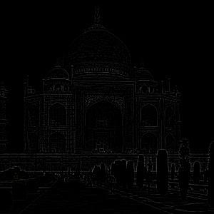
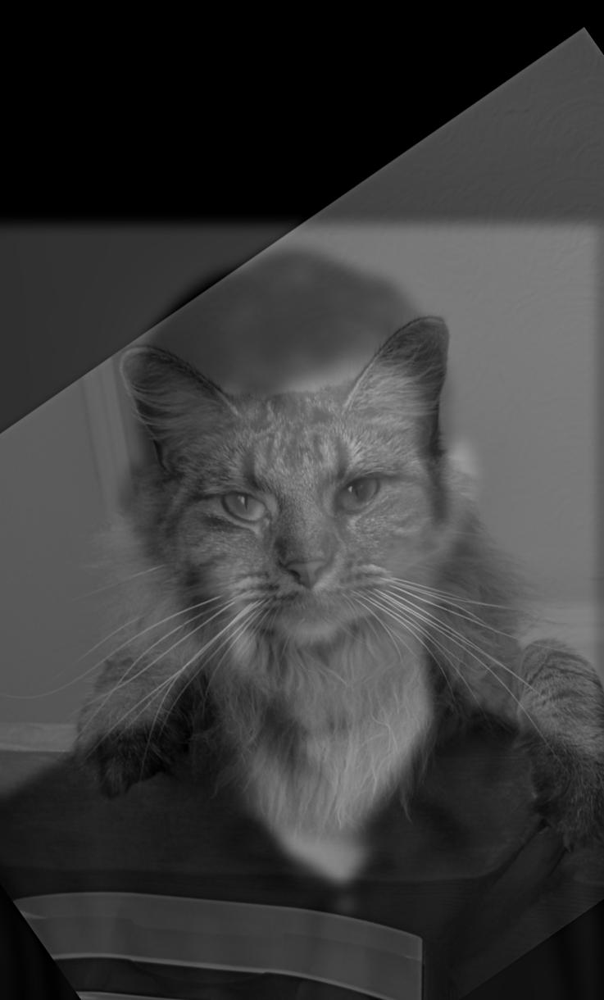

Project 2:
Part 1.1: Convolutions from Scratch!
We implemented 2D convolution using only NumPy, with two approaches:
- 4-loop implementation: Explicitly loops over every pixel and kernel element.
- 2-loop implementation: Loops over pixels, but uses NumPy's vectorized
sum over the local window.
Code Implementations
def conv_4loops(im, kernel):
pad_h, pad_w = kernel.shape[0] // 2, kernel.shape[1] // 2
padded_im = np.pad(im, ((pad_h, pad_h), (pad_w, pad_w)), mode='constant', constant_values=0)
out = np.zeros_like(im)
for i in range(im.shape[0]):
for j in range(im.shape[1]):
val = 0
for di in range(-pad_h, pad_h + 1):
for dj in range(-pad_w, pad_w + 1):
val += padded_im[i + pad_h + di, j + pad_w + dj] * kernel[di + pad_h, dj + pad_w]
out[i, j] = val
return out
def conv_2loops(im, kernel):
pad_h, pad_w = kernel.shape[0] // 2, kernel.shape[1] // 2
padded_im = np.pad(im, ((pad_h, pad_h), (pad_w, pad_w)), mode='constant', constant_values=0)
out = np.zeros_like(im)
for i in range(im.shape[0]):
for j in range(im.shape[1]):
out[i, j] = np.sum(padded_im[i:i + 2 * pad_h + 1, j:j + 2 * pad_w + 1] * kernel)
return out
Runtime Comparison
On a 2019x1658 image with a 9x9 kernel, the runtimes were:
- 4-loops: 1 min 20 s
- 2-loops: 14.3 s
- scipy.signal.convolve2d: 0.45 s
The large performance gap highlights the importance of vectorization and optimized libraries.
The scipy implementation is much faster because it uses highly optimized C code under the hood.
Boundary Handling
We pad the image with zeros so that convolution near the edges includes fewer valid pixels. This is equivalent to the
mode="same" and boundary="fill" settings in scipy.
Results
Part 1.2: Finite difference operator
We want to find edges in the cameraman image using the finite difference operator.
To do so, we convolve the image with:
D_x = [[-1, 0, 1]], D_y = [[-1], [0], [1]]

Cameraman
Cameraman Gradient in x direction

Cameraman Gradient in y direction
To turn into a gradient image, we compute the magnitude of the gradients in both directions,
cameraman_grad = sqrt(Ix^2 + Iy^2)
where Ix and Iy are the results of the convolution with D_x and D_y respectively.
We then turn into an edge image, by thresholding the gradient image. We set all values
below a certain threshold to zero. I chose 0.25 since it seems like it minimzed noise,
with much of the grass not showing up in the edge image.
The resulting edge image is shown below:
Cameraman Gradient Magnitude
Cameraman Edge Image, threshold=0.25
Part 1.3: Difference of Gaussian filters
The previous edge image is somewhat noisy. To remedy that, we can first apply a gaussian blur to the image,
before finding the gradient. However, it turns out that since convolutions are associative, we can convolve our
D_x and D_y operators with a Gaussian kernel, and use the resulting
Difference of Gaussian operator instead.

Blur, then gradient
Part 2.1: Image Sharpening
To sharpen an image, we use the unsharp mask filter.
The idea is simple:
- First, blur the original image to remove high-frequency details.
- Subtract the blurred image from the original to extract the high-frequency components (edges and fine details).
- Add some scaled amount of these high-frequency details back to the original image. This enhances the edges, making the image look sharper.
Mathematically, the sharpened image can be written as:
sharpened = original + α * (original − blurred),
where α controls the sharpening strength. Higher α means stronger sharpening.
Taj Mahal Example
Below, we show the blurred version of the Taj Mahal image, the extracted high frequencies,
and the final sharpened images at different α values.

Original Taj Mahal

Extracted High-Frequency Components
Applying different sharpening strengths:
As α increases, the edges and details become more pronounced. However, if α is too high,
the image can start looking unnatural with strong halos around edges.
Another example, from a snowy day in Boston. One can see that as alpha increases, the small
variations that make up the halo of the lamp take on a weird, "crackly" look.
Extracted High-Frequency Components
Part 2.2: Hybrid Images
Hybrid images combine the low frequencies of one image with the high frequencies of another.
Up close, the high-frequency image dominates, while at a distance, the low-frequency image takes over,
creating an optical illusion. This effect is achieved by:
- Low-pass filtering one image to preserve only coarse features.
- High-pass filtering another image to extract fine details.
- Adding the two results together with an appropriate cutoff frequency.
Flag hybrids: Full Process
We show the full pipeline for two images of me doing the human flag
Next, we look at the Fourier transforms of both images:
Flag RSF FFT (Low-Frequency Image)
Flag Bart FFT (High-Frequency Image)
We apply a low-pass filter to the Bart flag and a high-pass filter to the RSF flag. The cutoff frequency controls how much detail we keep from each image.
I also added an additional parameter c to control how much of the lower frequencies to remove, by doing
high = im - c * blur
I chose (sigma_high=3, sigma_low=4, c=0.3) because that worked best empirically.
Low-pass Filtered Flag at RSF
High-pass Filtered Flag on the Bart
Note that the FFT of the low-pass filtered image is cross shaped --- since high frequencies correspond
to the corners of the FFT, those are filtered out and depicted as black.
The final hybrid image is obtained by taking their sum.
Final Hybrid: Flag Bart + Flag RSF
Other Hybrid Images
For the other hybrids, we only show the originals and final results:
Derek + Nutmeg (sigma_high=5, sigma_low=8, c=0.3)

Original Derek

Original Nutmeg

Hybrid: Derek + Nutmeg
Me and David (sigma_high=5, sigma_low=3, c=0.6)

David
Part 2.3 + 2.4: Multi-resolution Blending & The Oraple Journey
Multi-resolution blending builds a smoothly blended composite by combining information from different spatial
scales. The steps I used:
- Build a Gaussian stack for each input image (progressively blur).
- Form Laplacian layers by subtracting each Gaussian level from the next-coarser Gaussian.
- Build a Gaussian stack for the mask (same sizes) and use mask levels to blend corresponding Laplacian levels.
- Reconstruct the blended image by collapsing the blended Laplacian stack back to full resolution.
Below we show the Gaussian & Laplacian stacks for the Apple + Orange example and present two additional blended examples
Apple + Orange — Gaussian & Laplacian Stacks
Gaussian levels and the Laplacian layers used for blending:

Apple

Orange
Apple + Orange: Gaussian & Laplacian stacks and blended reconstructions (Figure 3.42 reproduction)
Standard Blend
A second example blends the following with a simple horizontal mask. I wanted to take the pose from the guy on the left
and combine it with the guy on the right.
We show the originals and the final multi-resolution blended result.
The quarter of my eye - Irregular Mask Blend
For the third example we use an irregular mask (not straight lines).
Irregular mask (used for blending)
Quarter + Me (blended result)
Laplacian stack visualization (replicated figure)